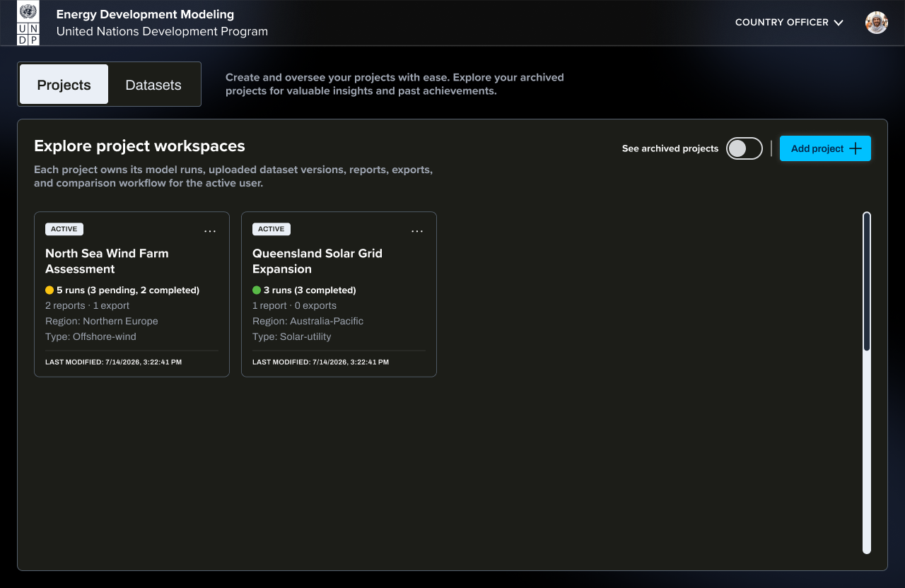
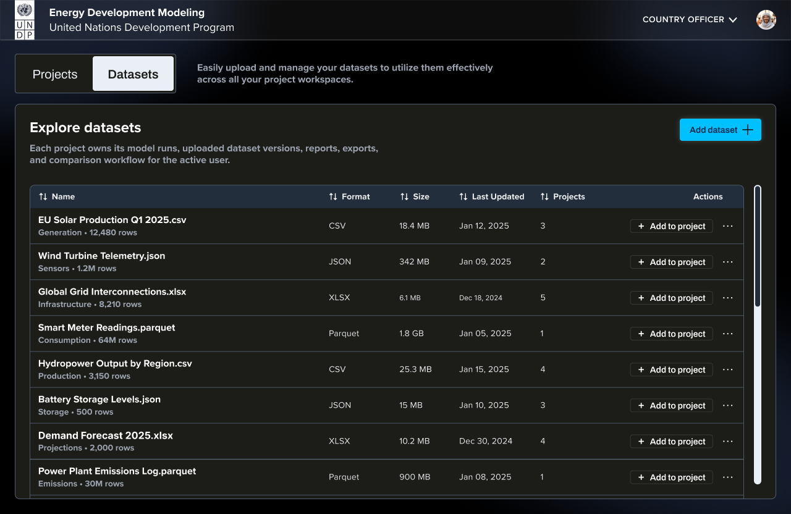
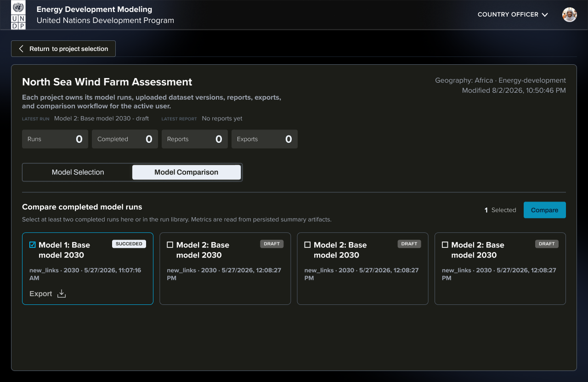

Portfolio — active and archive
Retain the current separate collapsed archive; reduce decorative prominence. Figma source
Portfolio — active only
Prioritize status and project metadata. Figma source
Figma — Portfolio — active only
Current frontend — projects
Create project
Use a compact responsive dialog with readable fields. Figma source
Dataset library
No mounted equivalent: restore the existing library component and navigation. Figma source
Figma — Dataset library
The existing dataset component is not reachable as a page; no equivalent current-page screenshot exists.
Results overview
Collapse read-only inputs; keep evidence limitations visible. Figma source
Model setup
Current 1,100px node clips controls. Move editing into normal responsive layout. Figma source
Project and models
Keep dedicated comparison flow; restore consistent model actions. Figma source
New model
Improve field hierarchy, sizing and mobile gutters. Figma source
Comparison selection
Do not copy draft eligibility or inconsistent sample counts. Figma source
Figma — Comparison selection
Current frontend — project
Comparison results
Preserve existing advanced metrics, reference selection and deltas. Figma source
Energy results
Keep chart-local controls; restore label search and fix empty states. Figma source
Current mobile layouts
No mobile Figma frames were supplied. These captures guide responsive acceptance criteria. Full-page screenshots may include document content below the viewport behind a modal; that alone is not a backdrop defect.
Widgets and proposal evidence
Section images provide overviews. Four enlarged slides clarify input, result and management intentions; not every proposal slide was separately rendered at full resolution.